더인 교육 12일차
B.D · 들어가며 · Metal 공정 · 정리하자 · Metal의 Work function을 공부해보자 · Al 을 사용하다가 Cu를 사용하게 된 이유 (다마신 공정을 설명하기 위해) · Al 배선 공정 (한 번 짚고 넘어가자) · Cu 다마신 공정 · Cu etch에 대한 얘기 · Metal 을 열처리 했을 때 (14pg) · 금속 배선의 역할 · 패드란? · 과거의 수율과 지금의 수율 · B.D · R! PR의 사용조건 · 금속의 박막 조건 · Metal 공정 · PVD 공정 · CVD 공정 · ALD 공정 · PVD vs CVD vs ALD · SOD, SOH · 다시 내 말로 정리해보기 · SiO₂를 CF₄ gas로 etch 하는 메커니즘 · 결국에 다양한 Metal과 Semi, Metal과 Metal 사이에 오믹 컨택을 어떻게 시키는지에 대한 얘기이다. · Ion Implantatiion · 메모리 반도체 · R! PR Mask의 용도 · Mask는 이온주입시에 Mask 자체도 이온주입이 된다! · ★진공 & 플라즈마★ · Vacuum (진공): 기체 분자수의 감소 · 플라즈마를 사용하는 공정은 다시 생각해봐야한다? · 스터디
1. B.D
- 요즘에는 Fact check를 중요하게 생각한다. (이건 당장 졸논에도 해당되니 광촉매 반드시 공부)
- 자소서에 쓴 내용 중에 이 사람 이걸 잘 못할 것 같은 것 위주로 물어본다.
- Photo 공정을 했으면 물론 플라즈마를 물어볼 수도 있지만 자소서에 타겟했는데 관련된 원리나 그런걸 물어본다는 얘기이다. 그러니까 Etch를 준비했으면 플라즈마를 알아야지
- 복습할 때 여기에 적힌건 문어체니까 구어체로 바꿔서 정리 노트에 반드시 정리하기
- 플라즈마 & 진공 내용은 반드시 잘 정리해라
2. 들어가며
Samsung: PHOTO, Etch, IIP, Diffusion, CVD, PVD(→Metal), Clean, CMP
- 부서 자체는 PVD는 없어졌다. 그리고 Metal이 됐다.
SK: P(Photo)기술, E(Etch)기술, D(Diffusion)기술, C(Clean/CMP)기술, Metal
- 삼성의 8대 공정에 있는 Diffusion이 SK 하이닉스에 있는 Diffusion 팀이 아니다. 이제는 SK 하이닉스에서는 ALD가 맡는다.
(1) Conventional (과거에는)
→ 과거에는 Diffusion과 CVD가 분명하게 달랐다.
Diffusion
- Diffusion: Si(s) + O₂(g) → SiO₂(s)
- Si위에 SiO₂가 일부 생기면 그때부터는 확산이다. 산화 공정인데 확산이란 말이지.
- 사용하는 장비: Furnace (1200~1400°C)
CVD
- 원하는 Film을 형성하기 까지 여러 기체를 “동시에” 넣어주는 것이 목표이다.
- A(g) + B(g) → C(s) + D(g)
- SiH₄(g) + O₂(g) → SiO₂(s) + 2H₂(g)
(2) Modification (현재에는)
→ 현재에는 Diffusion과 CVD가 사용하는 메커니즘 자체는 같다.
Diffusion
- A(g) + B(g) → C(s) + D(g)
- 사용하는 장비: Furnace(Vertical)
– 여전히 Furnace니까 고온 적용이 가능하다.
– 사용하는 장비가 과거와 다르게 Vertical이다.
- 이제 ALD는 Diffusion 에서 진행한다.
– ALD가 등장한 배경은 HDPCVD로도 더 이상 Depo가 어려워지고, Void가 생긴다. Step Coverage가 좋지 않기 때문에 ALD가 현재에 등장했고, Diffusion 공정이 진행되고 있다.
– 결국 ALD 도 표면에 확산이 되어야 하는 것이다.
– CVD의 메커니즘이니까 ALD도 해당되겠네
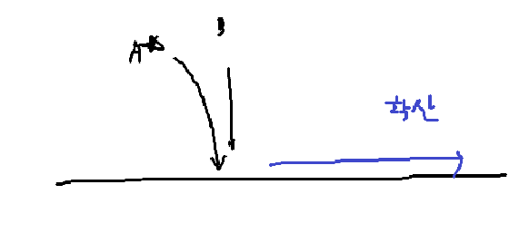
CVD
- A(g) + B(g) → C(s) + D(g)
- 사용하는 장비: Single Type
- 저온 적용이 가능하다.
- 저온 적용하기 때문에 퀄리티가 낮고, 절연체로만 사용해, 중요한 공정에서는 사용할 수 없다.
- 그래서 이젠 CVD 공정 갈래요! 하면 의미가 없다는 것이다. 별로 중요하지 않은 공정이기 때문이다.
→ 결국 현재에는 Diffusion가 CVD의 차이는 고온/저온 공정 여부 차이
- 결국 고온 공정과 저온 공정의 차이는 패턴의 밀도를 얘기한다.
- 현재에는 고온 공정을 진행한다고 하면 Diffusion을 진행한다.
반도체에서 400°C 기준이 저온 고온 공정의 개념
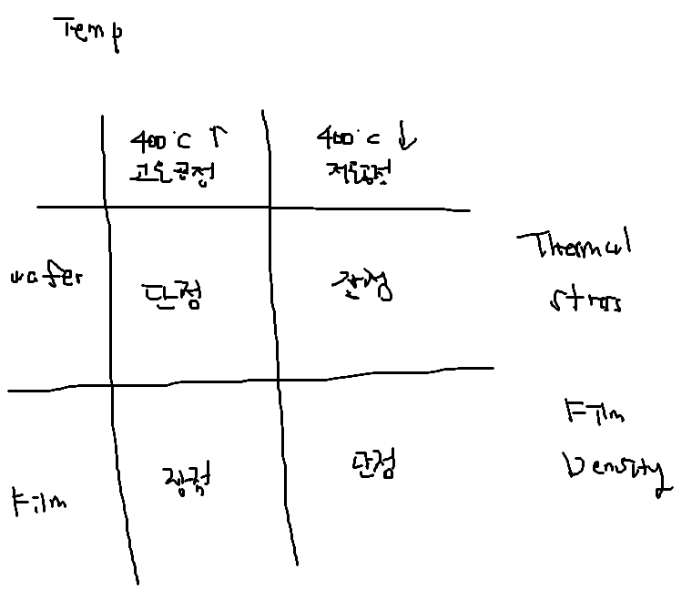
- 고온공정은 Al 정도면 660°C의 m.p 를 갖는다.
- 고온 공정의 기준은 400°C 인 것이고, 고온 공정이라고 해서 막 온도가 높으면 결국 이전 금속 배선들에도 영향을 줄테니까 그렇게 못한다.
Q. 열팽창계수가 크면 왜 밀도가 좋아지는가?
A. 크게 늘었다가 크게 응축되는데, 그 과정에서 크게 응축되는 소재가 더 밀도가 좋아진다.
3. Metal 공정
- Metal의 배선은 외부로부터 들어온 전기를 전달해주는 신호 선
- Metal 배선 얘기가 나오기 전까지가 FEOL 공정 이고, Metal 배선이 나오고 나서는 BEOL
BEOL
- Conductivity는 Resistivity를 낮추는 게 중요하다. 전기전도도를 높이는 건 저항을 낮추는 것이다? (Resistiviy는 비저항 아니야?)
– 비저항을 낮추기 위해서 하고 있는 활동은? (물론 과거 기준)
1. Barrier Metal 적용
2. Silicide 형성
- Contact 형성, Via 형성, 층간절연막(IMD) 형성, Passivation 형성
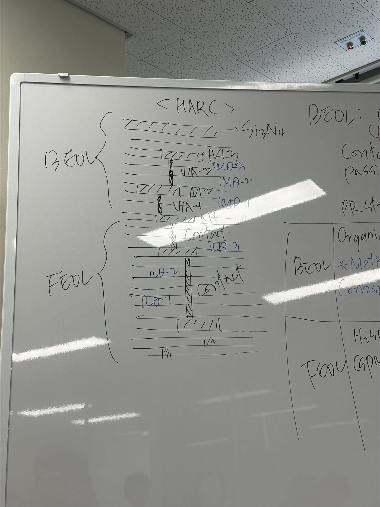
- FEOL 공정에서는 ILD, Contact이라는 이름을 사용한다.
- BEOL 공정에서는 IMD, Via라는 이름을 사용한다.
Q. FEOL에서는 왜 Contact, BEOL에서는 왜 Via를 사용하는가?
A. 첫 번째 금속층(M1)을 기준으로 FEOL과 BEOL이 나눠지는 것이고 그것에 따라 같은 목적이지만 이름이 달라지는 것이다.
Q. 그러면 첫 번째 금속층은 무슨 역할을 하는가?
A. M1은 소자의 단자(Source, Drain, Gate)에서 나온 신호를 처음으로 받아 연결하는 층
4. 정리하자
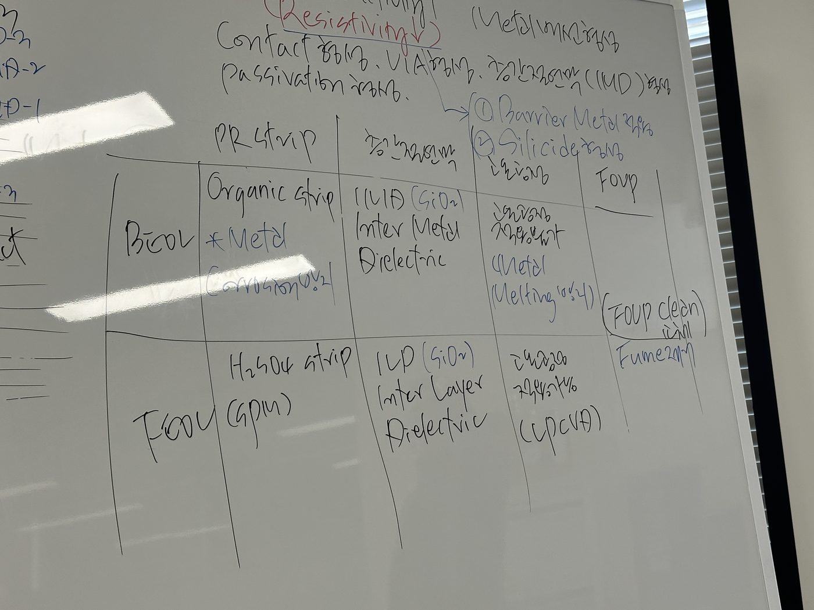
Q. 과거에는 Fume 제거를 안했는데 지금은 BEOL 공정이나 FEOL 공정이나 해준다?
A.
- 아 그러니까 Fume 제거는 목적인거고, FOUP cleaning을 진행한다는 것이네. 그러고 예전에는 그렇게 까지 안했는데 요즘은 미세화 되면서 이 Cleaning을 여러번 진행한다.
→ 과거에는 fume를 신경 쓰지 않았지만, 선폭이 좁아지고 금속과 민감한 막이 많아지면서 미세한 잔류물도 불량으로 이어져서 지금은 FEOL과 BEOL 모두에서 해준다는 설명
- 층간 절연막에 사용하는 SiO₂는 전부 같은 소재이다. 왜냐하면 1~30층에서 Nitride 안쓰잖아? 하지만 SiO₂에서 사고 났어? 라고 물어보면 어딘지 모르니 네이밍을 해준 것이다.
Q. Metal과 Semiconductor가 온도가 증가함에 따라 저항이 왜 이렇게 되는지 설명하시오.
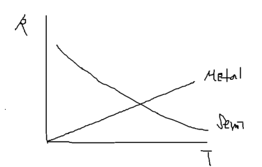
A.
- Metal은 격자 산란에 의해서 전자의 m.f.p가 줄어들고, Semi는 온도가 올라감에 따라서 전자가 에너지를 받아 점프하기가 쉬워진다.
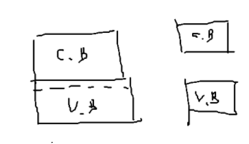
5. Metal의 Work function을 공부해보자
Q. 페르미 레벨이란?
A.
- 설명할 수 있어야겠지?
- 반도체의 경우에는 C.B와 V.B의 중간지점 전자가 존재할 수 있는 ….
[Claude 답변]
페르미 준위(Fermi level)는 전자가 그 에너지 상태를 차지할 확률이 정확히 50%가 되는 에너지 준위입니다.
(참고: 0 K에서는 전자가 채워진 가장 높은 에너지 준위와 같습니다. 반도체에서는 밴드갭 안에 있어도 되고, 그 자리에 실제 전자 상태가 없어도 정의됩니다.)
대상: “Q. 페르미 레벨이란?”
혼자 공부하면서 정리하기
- Metal의 페르미레벨이라고 하는 것은 Conduction Band의 가장 높은 에너지 준위를 갖고 있는 곳이 페르미 레벨이다.
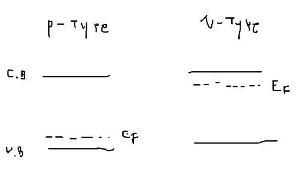
- P-type에서 적혀 있는 EF는 실제로 갖게 되는 에너지 준위고, N-type에서 적혀있는 EF도 실제로 갖게 되는 에너지 준위이다. 진성 반도체에서 EF는 그 자체로 페르미 디락 분포에 따르며 1/2지점에 찍히는 것임.
대상: “P-type에서 적혀 있는”
이해가 안되네 진성일 때는 확률이고 나머지는 실제 준위라는 거면 Ea랑 Ed는?
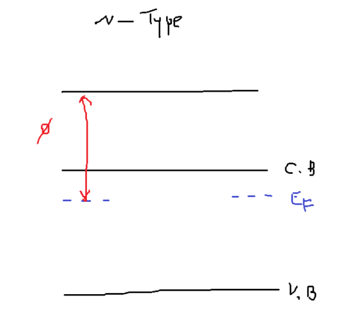
- Work function은 페르미레벨 준위에서 진공(?)까지이다.
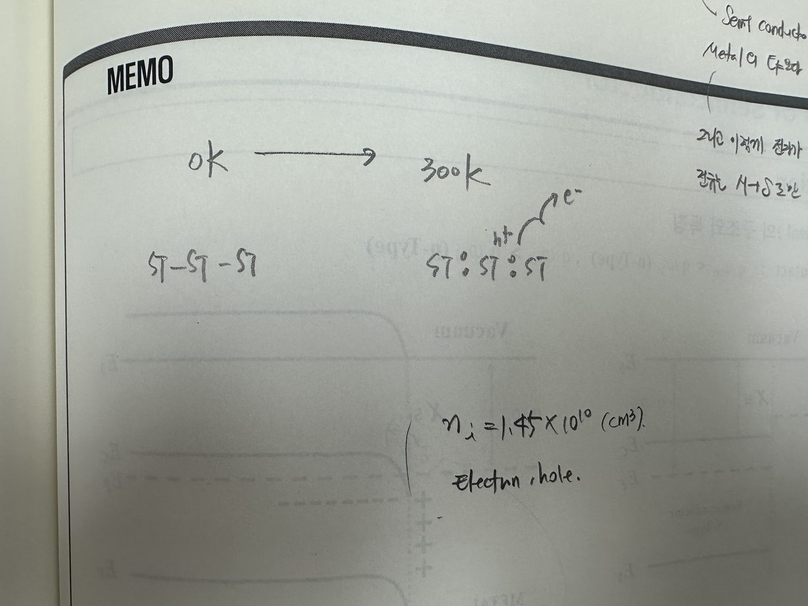
- 얌전히 0K 일때는 공유결합을 잘 하고 있겠지. 상온 (300K)에서 Si는 공유결합을 끊고 전자가 튀어나오고, 정공을 갖게 되는데 이 때 nᵢ=1.45×10¹⁰cm³ 만큼 을 갖는다는 얘기이다. Electron이나 hole이나 똑같다.
6. Al 을 사용하다가 Cu를 사용하게 된 이유 (다마신 공정을 설명하기 위해)
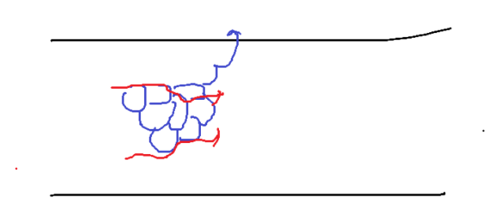
- 전자들이 이동을 하다가 Al 결정립 하나가 빠져나가면 지나가는 배선의 폭이 줄어들고 저항이 커지는 결과로 이어진다.
- 그러면 RC delay가 커지게 된다.
- 결국 이러한 이유 때문에 Al 에서 Cu로 바뀐이유이다.
– 과거(70~90년대 중반) 에는 소재나 공정이 안바뀌는데, 이렇게 바뀐건
7. Al 배선 공정 (한 번 짚고 넘어가자)
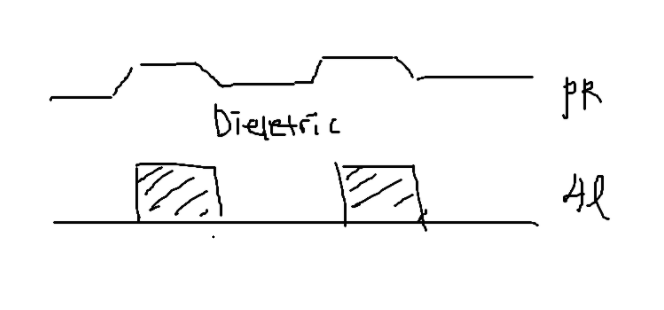
(1) Al 증착 → (2) Photo → (3) Etch → (4) PR 제거 공정(Ahsing+PR Strip) → (5) Dielectric 증착
8. Cu 다마신 공정
- 고려상감청자 문양 기법 (양각은 찍고자 하는 것만 남겨두는 것이고, 음각은 찍고자 하는 것을 파내는 것이다) 고려 청자는 음각 기법을 사용했다.
→ 이건 면접 때 얘기할게 아니다. 그냥 반도체 용도로 다마신 공정이 있다는 것을 알면 된다. 어원은 고려상감청자에서 온 것이지만 실제로 반도체와 관련 X
다마신 공정: Dielectric을 Etch하고 Metal을 채워 넣는 공정
(1) Dielectric 증착 → (2) Photo → (3) Dielectric Etch → (4) PR 제거 공정(Ahsing+PR Strip) → (5) Barrier Metal 증착 (Ta/TaN) → (6) Seed Cu 증착 (PVD) → (7) Main Cu 증착 (Electro-plating)
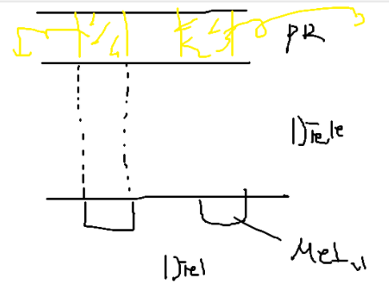
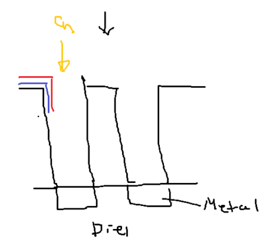
- 우리는 오믹 컨택을 만들어야 한다. ↔ 으로 움직일 수 있게. 근데 애초부터 오믹 컨택이 아니면 Barrier Metal을 사용해야하고, 그 얘기가 Ta/TaN 인 것이다.
- 오믹 컨택을 만든다는 얘기를 할 때는 머릿속에 일함수가 들어와 있어야 한다.
- Ta는 오믹컨택을 만들어주는 것이다.
- Cu는 상온에서 진행하는게 아니다. 저온 공정(~400°C)이어도 못해도 200°C는 된다. 그러면 이 온도에서 Cu가 확산이 될 수 있기 때문에 TaN을 사용하는 것이다.
- Seed Cu를 증착한 다음 Main Cu는 전해도금 방식으로 증착한다고 한다.
9. Cu etch에 대한 얘기
대상: “Cu etch에 대한 얘기”
책 다시 펴고 녹는점, 사용 gas 차분하게 정리하고 천천히 찾아보기
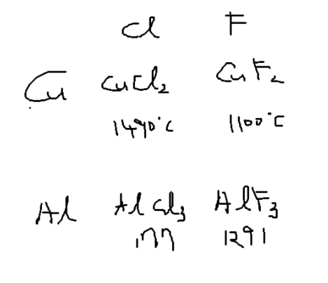
- 우리가 Gas로 Cl과 F를 사용하고자 하는 이유가 전기음성도가 높아서라고? ㄹㅈㄷ 이걸 어캐아누
→ 아 다른 material의 전자를 빠르게 끌어 당겨 → 반응해! → 날라가!
- Etch를 진행하게 되면 부산물과 Polymer 가 안생길 수가 없다.
- Cu는 Etch를 할 수는 있는데, Etch를 하고 나서 나오는 반응 부산물의 녹는점이 너무 높기 때문에 사용할 수 없다.
→ 그래서 절연체를 미리 깎아두고 채워넣을 생각을 한 것이다.
- Al도 그래서 Cl gas를 쓰는 것이다. 왜? F gas를 사용하면 생기는 부산물의 녹는점이 너무 높잖아?
대상: “→ 아 다른 material의 전자를 빠르게 끌어 당겨 → 반응해! → 날라가!”
걍 반응성이 높다고 퉁치면 안되나?
대상: “Al도 그래서 Cl gas를 쓰는 것이다. 왜? F gas를 사용하면 생기는 부산물의 녹는점이 너무 높잖아?”
녹는점이 높으면 못날려서 그런거지? 부산물도 없애야하는데 못없애서 문제가 생기는거야?
10. Metal 을 열처리 했을 때 (14pg)
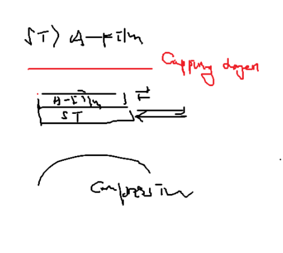
- Si의 열팽창계수가 Al보다 크기 때문에 Al에 Compressive stress가 걸리고, 그에 따라서 Hillock이 생긴다.
- 그래서 이걸 방지하기 위해서 Capping Layer를 사용했다. 그래서 Capping layer을 선정할 때 Young’s Modulus를 고려한다 (사진추가하기 15pg)
11. 금속 배선의 역할
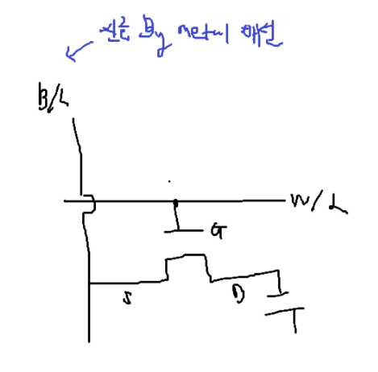
- 결국 B/L도 신호를 줘야하고 그건 Metal 배선으로 부터 전류를 흘려주겠지.
- Contact이나 Via나 결국 하는 역할을 같다.
FEOL 공정에서는 ILD, Contact이라는 이름을 사용한다.
BEOL 공정에서는 IMD, Via라는 이름을 사용한다.
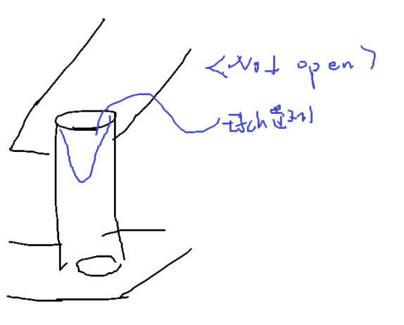
- Via를 먼저 열어주고 그 위에 수평적으로 배선을 연결을 해줘야 한다.
- Via가 Not open 되는 문제가 많았다고 한다.
- Modification 현재에는 이제 ALD, ALE 공정을 사용한다.
12. 패드란?
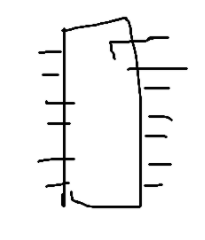
- 패드라는게 칩 안과 밖이랑 연결되어 있다고 한다. 거미줄처럼 되어있는 부분이 밖에서 전류를 흘려주면 안까지 연결되어 있는 구조
13. 과거의 수율과 지금의 수율
- 성숙 공정 기준 92~94%는 되어야하지만 예전에는 70~80% 수율도 허다했다.
- 이런건 설계 미스가 많았다고 한다.
14. B.D
- 공부할 때 왜 삼성과 하이닉스가 왜 세계 1등을 할 수 밖에 없었는지 삼성은 이러한 선언 그리고 하이닉스는 2013년부터의 HBM의 개발을 정말 왜 성공할 수 밖에 없었는지 발췌하고 내 생각을 추가해서 지원 동기에 적어라.
- 최근 인터넷 기사만 보고 얘기하지 말고.
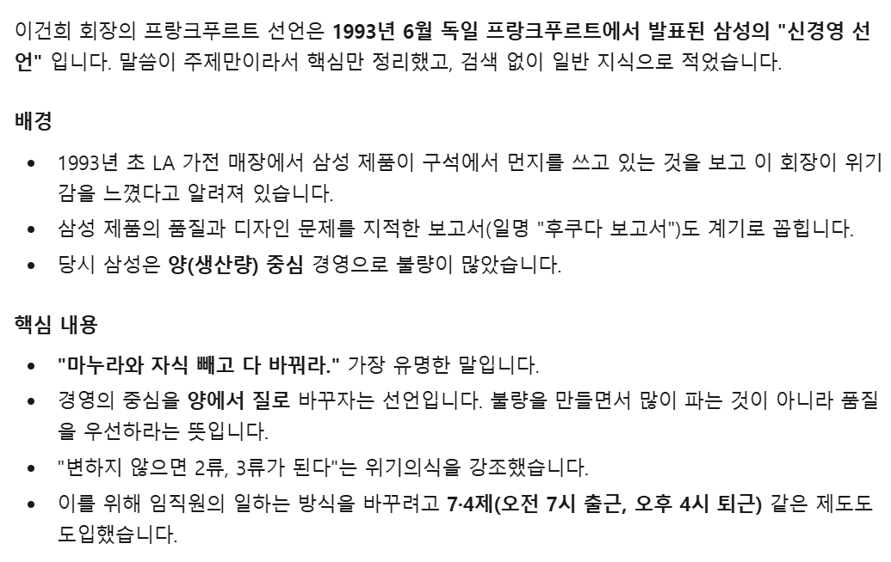
- 내년을 더 긍정적으로 바라보고 있다. 용인 팹이 지어지고 있고, 그곳으로 경력직들이 넘어갈 수 있다. 그 경력직들이 넘어간 자리에 채우는 것이다.
- 정리노트 해라. 안해서 안되는거지 해서 안되는 건 없다.
- 취업을 실제로 하게 되어도 본인 직무에 대한 깊이는 깊어지지만 결국 그 분야밖에 모르게 된다. 그래서 정리노트는 당장의 취업을 위해서만이 아니다. 가서도 승진하는 실력자가 되는 방법.
15. R! PR의 사용조건
- HRR (PR의 빛이 박막 하부까지 잘 들어가야한다.)
16. 금속의 박막 조건
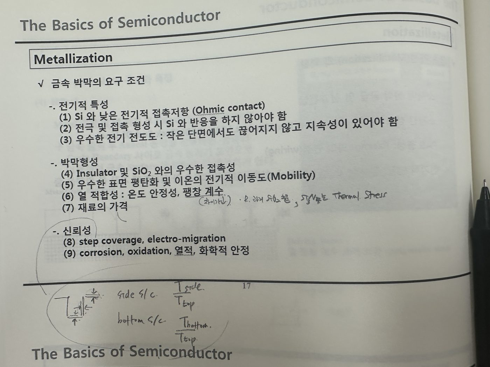
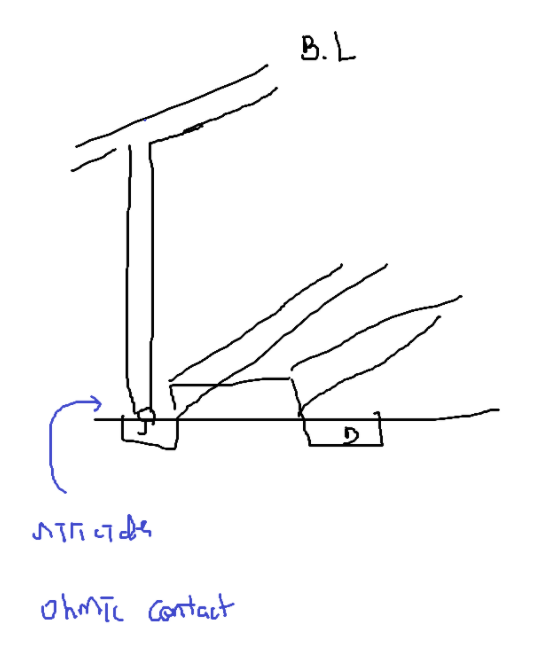
- 왼쪽 contact을 만들 때 Barrier Metal을 만드는게 아니라 silicide를 사용해서 오믹 컨택이 가능하게 해준다.
- Al을 과거에 계속 썼던 건 결국 가격 때문인 것도 크다.
Q. 왜 Step coverage를 신경쓰는가?
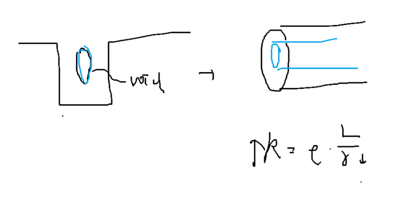
A.
- Void Free한 Gap Fill을 채우기 위해서이다.
- Void가 뚫리면 신뢰성의 문제가 생긴다. 신뢰성의 문제는 Void가 생기면 저항이 커지게 된다. (전기적 특성이 달라진다.)
- 빵구가 뚫리면 금속에서 지름이 작아지는 결과(면적) 따라서 저항이 커지게 되기 대문이다.
Q. 그러면 Dielectric 관점에서는?
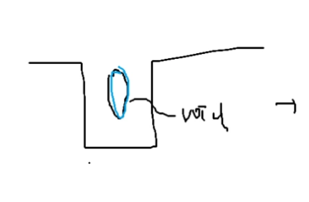
- 절연파괴를 신경쓰는데, 테스트를 할 때 절연파괴전압을 체크한다고 한다.
- Void가 생기면 절연파괴가 낮아지고 신뢰성에 문제가 생깁니다.
17. Metal 공정
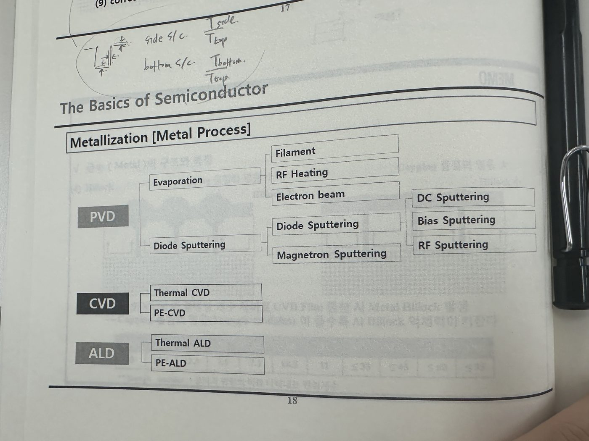
18. PVD 공정
- PVD 공정을 사용한건 순도가 높기 때문이다. 순도가 높아야 비저항이 낮고 전기전도도가 높다.
- 밑에서 정리한 것처럼 Adhesion이 부족해도 순도가 높기 때문에 사용했다.
- 결국 PVD는 에너지를 얼마나 공급해줄 것인가가 Adhesion과 연관되어서 중요하다!!
대상: “PVD 공정을 사용한건 순도가 높기 때문이다. 순도가 높아야 비저항이 낮고 전기전도도가 높다.”
여기를 쫙 말할 수 있어야겠지?
Q. Evaporation 하고 Sputter에는 무슨 차이가 있는가?
A. 이들은 Precursor Energy를 전구체가 갖고 있는 힘이 곧 Wafer에 도달해서 얼마나 잘 붙어 있게 하는지가 중요하다. Evaporation 같은 경우는 Wafer 쪽에 나폴나폴 가는 것이고, Sputter는 빵 때리는 것이다.
결국 Step coverage를 논하기 전에 이것들은 얼마나 Adhesion이 잘되는지가 중요하다. 접착이 얼마나 잘 되는지는 또 전류 누설과 관련되어 있다.
대상: “접착이 얼마나 잘 되는지는 또 전류 누설과 관련되어 있다.”
이 생각 꼭 내걸로 만들기
19. CVD 공정
- Adhesion이 좋아지긴 하지만 Purity가 떨어진다. 그러면 또 전기전도도가 안좋아지는 걸로 연결된다.
→ 그래서 PVD와 CVD의 각각 장단점이 있기 때문에 증착하는 박막에 특성에 맞게 공정을 사용한다.
20. ALD 공정
- Gap fill을 해주기 위해 ALD까지 발전을 했다.
21. PVD vs CVD vs ALD
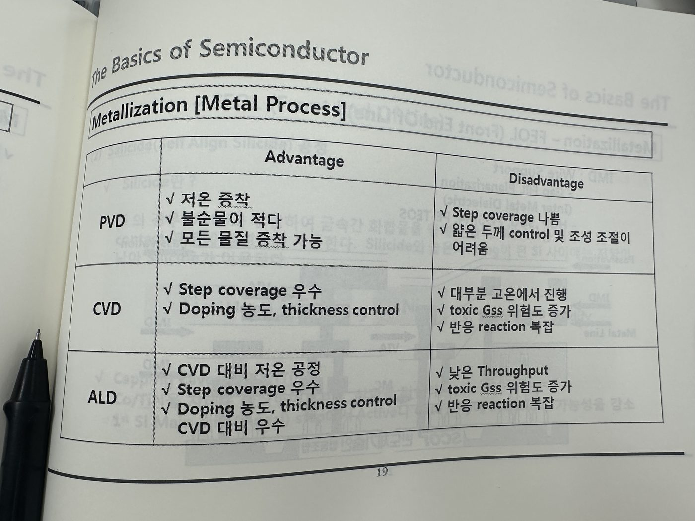
- PVD는 전구체와 관련된거지 녹는점과는 관련 없다. PVD는 에너지에 의해서 증착이 달려있는 것이다. 예전에 Evaporation 일때는 녹는점이 관련 있었지
- Bulk 영역을 따질거면 어떤 공정을 쓰는지가 의미가 있는가? 실질적으로 문제가 생기는건 Step 구조나, Trench가 있거나, Trench가 밀집되어 있을 때 문제가 생긴다.
- Void 구조나 이런걸 논하는건 Step coverage 와 관련이 있는 것이다. Bulk Area는 그냥 쭉 증착되는데 Void를 논할게 없다는 것이지. Trench 같이 구덩이에 증착이 될 때 Step coverage를 논하고, Void가 생기네마네를 논하는 것이다.
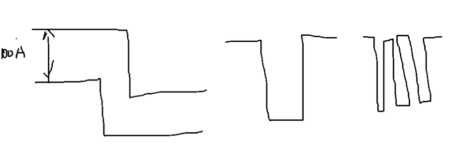
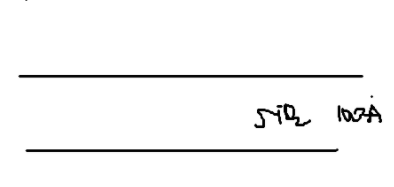
- SiH₄는 독성이 높은 Gas이다. CVD 공정을 할 때 SiO₂를 만드는데 사용. 그런데 너무 위험해서 Fab에 문이 다 열린다고 한다.
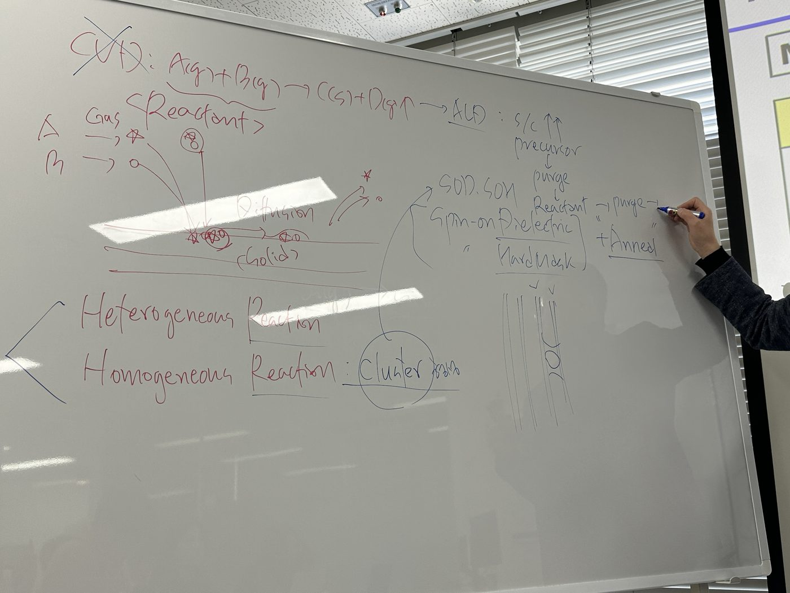
Q. CVD 공정의 단점은?
A.
- 기체 상태의 A, B 반응물(두 종류 이상일 수도 있음. 그냥 여러가지 기체 동시에로 기억)을 넣어주면 우리가 원하는 Heterogeneous nulceation 만 일어나는게 아니라, Homo 도 생기게 된다.
- 기체 상태의 A, B 반응물을 넣어주게 되면 반응성이 너무 커서 Homogeneous nucleation이 일어나서 기체 상에서 만나서 박막위에 떨어지게 된다.
- 그러면 CVD 공정의 메커니즘은 Hetero, Homo 이고 여기에서 Homo를 줄이려면 어떻게 해야하는가? (Homo로 인해 Cluster가 형성된다.)
→ 여기에서 ALD요! 라고 하면 안된다. ALD 자체는 Step coverage를 늘려주는 것이다. CVD의 이런 단점을 극복하기 위해서는 SOD와 SOH 방법을 사용한다. 아 물론 어닐링 공정을 진행해야 하지만 그래도 Homo 반응을 줄일 수 있어서 step이 늘어나도 채택 했겠지
→ 그래서 이건 Modification (현재)에 일어나는 반응이다.
22. SOD, SOH
- Spin-on Dielectric
- Spin-on Hardmask
- 액체 상태의 재료를 웨이퍼 위에 떨어뜨리고 웨이퍼를 회전해서 펼친다. 그 과정에서 작은 틈새로 들어가며 Gap Fill 이 된다.
- 이 들은 CVD 대신 사용하는 방법이지만, Annealing을 통해 막을 고체로 만들고 치밀화를 시켜줘야 한다.
Q. ALD 에서 왜 Purge를 하는가?
- CVD에서 Cluster가 생기는 게 문제라매 그래서 purge를 해주는 건 A랑 B가 같이 들어가서 cluster를 생기는 상황이나, A가 제대로 날라가지 않고 남은 상태에서 B가 들어가서 반응하는 상황이나 비슷한 cluster를 만드는 상황이 된다는 것이다.
- 단, 원자층 한 층씩 까는 것이다보니 시간이 너무 오래걸린다라는 것이다. (이건 또 batch type 같이 어떤 방법을 써서 개선하려고 했겠지?)
- 결론은 ALD 자체는 원자층 하나씩 깐다는 생각으로부터 Step Coverage를 늘릴려고 했던 것이지만, 실질적으로 ALD 과정을 진행하려고 하다보니 CVD처럼 두 gas를 반응하지 않게 해줄 수 있어야 했다. 그래서 A gas를 넣어주고 purge를 해주고 B gas를 넣어주는 일련의 과정은 CVD에서 Homo반응이 일어나서 cluster가 생기는 상황을 방지하기 위함이다.
23. 다시 내 말로 정리해보기
PVD 공정이 Purity는 가장 베스트입니다. 그렇지만 접착이 곧 이온 에너지와 관련이 있어서 가장 중요한 파라미터입니다. 접착이 제대로 되지 않으면 전류 누설이 생길 수 있기 때문에 CVD 공정이 도입됩니다.
CVD 공정은 화학적인 방법을 사용하기 때문에 접착이 좋습니다. 하지만 gas 들의 반응성이 크기 때문에 homogeneous nucleation 반응이 일어납니다. 이에 따라 cluster가 생겨 원하지 않는 반응물들이 생기고, 증착되어 문제가 생깁니다. 이에 따라 Cluster가 생기는 방식에서 SOD, SOH를 통해 개선했습니다. 물론 어닐링 공정이 추가되었음에도 말이죠.
ALD 공정 자체는 S/C를 높이기 위해서 만들어진 공정입니다. 그렇지만 공정을 진행할 때 A 다음 purge를 진행하지 않으면 A와 B가 만나면 클러스터가 생기니 Purge를 하는 것이지. CVD의 cluster가 생기는 해결 방법으로 ALD가 등장한 것은 아니다. 다만 ALD는 속도가 너어무 느리니까 특정 공정에만 쓰인다는 것이지.
Ref) 메틸기를 쓴다 위험하다 = 술이 에탄올이고 메탄올 먹으면 죽는 원리랑 같은거지
24. SiO₂를 CF₄ gas로 etch 하는 메커니즘
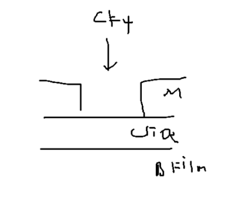
SiO₂(s)+CF₄(g) → SiF₄(g) + O₂(g)
- SiO₂ target으로 Etch
- SiF₄ 는 부산물로 -86°C 이 말은 상온에서는 톡 쳐주면 날라간다라는 말. 휘발성이 높은거지. m.p가 -86°C인 것임
25. 결국에 다양한 Metal과 Semi, Metal과 Metal 사이에 오믹 컨택을 어떻게 시키는지에 대한 얘기이다.
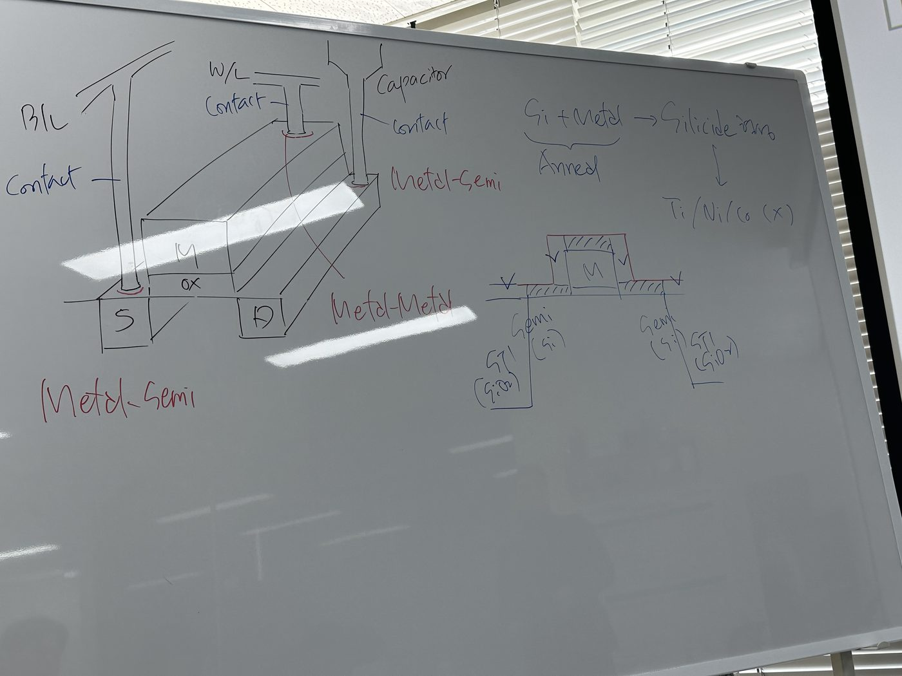
- Si + Metal → Silicide를 통해 오믹 컨택을 만들어준다.
- Si와 Metal은 Annealing을 시켜준다.
- 빗금을 안친 부분만 Ti/Ni/Co 를 사용한다고 한다.
- 결국에 오믹은 저항을 낮추는 것, 전자가 잘 넘어갈 수 있게 해주는 것, 전류가 잘 넘어갈 수 있게 해주는 것이다.
- 체크한 표시한 곳은 Ti/Ni/Co ?
122pg
- Ti는 오믹 컨택을 형성하기 위해서 사용한다 - 옅은 녹색
- TiN는 Diffusion Barrier의 역할 - 찐한 녹색
123pg
- W는 Nucleation을 통해 Seed를 넣어두고 Bulk W를 증착 시킨다.
- Bulk Area에 Metal을 증착하는 경우에는 Rs를 측정해서 특성을 체크하고 넘어간다. 그렇지만 Bulk Area에 금속을 증착하는 경우가 그렇게 많지 않다. 따라서
124pg
- 이건 Transistor만 나와있는 NAND flash 단면도 이다.
- 가운데에 있는 Metal 층을 기준으로 FEOL과 BEOL이 구분된다!
대상: “가운데에 있는 Metal 층을 기준으로 FEOL과 BEOL이 구분된다!”
그림을 보면서 다시 확인해보자
125pg
- R: Cu를 Etch를 못하는게 아니라 부산물이 m.p이 높아서이다.
126pg
- Al는 SiO₂와의 접착력이 좋다. Adhesion이 좋은건 전류 누설이 안생겨 → 전기전도도가 좋아!
- Al 단점은 hillock이 생기고, 결정립계를 타고 삐죽 튀어나오게 된다.
- Cu의 장점은 Electro-Migration이 안생기는게 가장 큰 장점.
- Cu의 단점은 또 반복 계속 반복
- 전해 도금 할 때도 Seed-Cu는 PVD를 통해서 진행한다. (책 보면서 다시 복습해보기)
26. Ion Implantatiion
132pg
- Furnace의 개발은 Diffusion을 위한 것이었다.
- 그렇지만 Diffusion은 확산 방향성이 없기 때문에 제어가 안된다.
- Mask로 막아주는 곳 아래는 확산이 안되길 바라는 건데 확산이 되니까 문제가 생기는 것이다.
(1) Deep Junction - 확산
- 그냥 열을 줘서 확산이 되고 깊게 들어갈 수 있는데 그러면 Mask (R: Prevent, Protect의 의미)가 막아주질 못한다.
- 우리가 원하는 원하는 깊이만큼 이온을 주입할 수 있도록 하는 장비를 만들 생각을 했다.
(2) Shallow Junction - 이온 주입
- 이온이 에너지를 갖고 움직이다가 에너지가 다써서 격자에 위치하는 것을 말한다.
- 실제로 이온 주입을 하며 격자가 망가지기 때문에 Annealing이 필요하다.
1963년
- 비정질이면 이온 주입이 결정질 일 때보다 공유결합을 끊고 가는 정도가 적어서 같은 에너지로도 더 깊은 곳까지 주입된다?
대상: “비정질이면 이온 주입이 결정질 일 때보다 공유결합을 끊고 가는 정도가 적어서 같은 에너지로도 더 깊은 곳…”
설명이 조금 이상한데? 비정질이라고 공간이 비어 있는건 아니잖아..
133pg
Ion Implantation에서 사용하는 용어 정리
(1) Dose: Ions/cm³ or Atoms/cm³
- 단위면적당 주입된 이온의 양
(2) Junction Depth
- Wafer 표면으로부터 주입된 이온의 깊이
(3) Projected Range (Rp)
- 주입된 이온의 농도가 가장 높은 지점
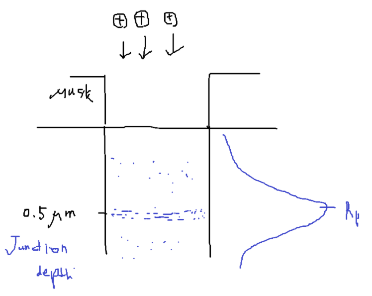
Si 격자 크기 - 암기하기!
100: 5.43 Å
111: 3.13 Å
Si-Si 활성화 에너지 (Bonding이 끊어지는 에너지) - 암기하기!
1.83 eV
계산 (100 기준)
(1) 0.5 μm = 5000 Å 깊이에 들어 있는 격자 수
- 5000 Å ÷ 5.43 Å = 920.8
(2) 그 깊이까지 가면서 끊어내야 하는 결합의 에너지 합
- 920.8 × 1.83 eV = 1685 eV = 1.685 keV
정리
- 이건 결국 이온에 약 1.7 keV(1.685 keV)를 주입하면, 0.5 μm 깊이까지 가면서 결합을 끊어낼 수 있는 에너지를 갖고 있고, 그 에너지를 다 소모하면 그 깊이에 위치하게 된다는 계산이다.
실제 이온주입을 하면 10¹²~10¹⁸ 정도를 넣는다고 한다.
ex) 3가 B⁺을 주입한다고 해보자. (P도 마찬가지겠지?)
- Si는 10¹⁰ (이건 Intrinsic 반도체가 갖고 있는 수) 만큼 있는데, B가 10¹⁵만큼 있다고 한다면 10¹⁰은 100억개, 10¹⁵ 1000조개가 된다. 그러면 100억개 + 1000조개가 되는 것이다.
- 이 말은 이미 상온에서 갖고 있던 Si의 원자는 소수 캐리어가 되고, 주입해주는 이온 여기에서는 B⁺가 다수 캐리어가 되는 것이다.
- 그러면 이온주입을 할 때는 다수 캐리어를 쓰는 것이지만 채널을 형성할 때는 10¹⁰, 10¹⁵ 중에 소수 캐리어인 10¹⁰을 사용하는 것이다.
대상: “그러면 이온주입을 할 때는 다수 캐리어를 쓰는 것이지만 채널을 형성할 때는 10¹⁰, 10¹⁵ 중에 소수…”
와 이런거였네 ;;
27. 메모리 반도체
- 메모리는 CMOS, Cell에는 NMOS 가 있다.
- Cell과 Core Peri 영역이 있는데, Core Peri 영역은 28% 정도가 된다고 한다.
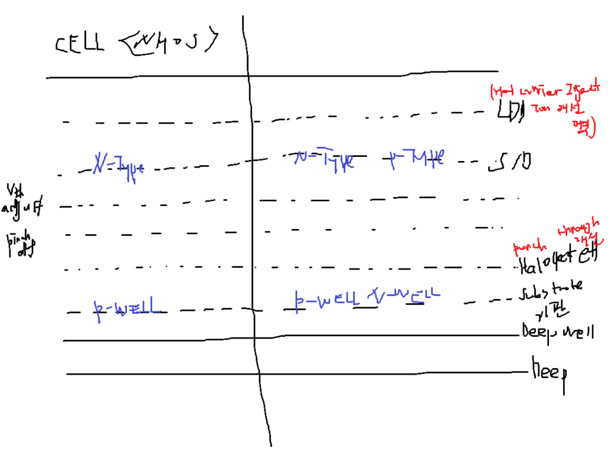
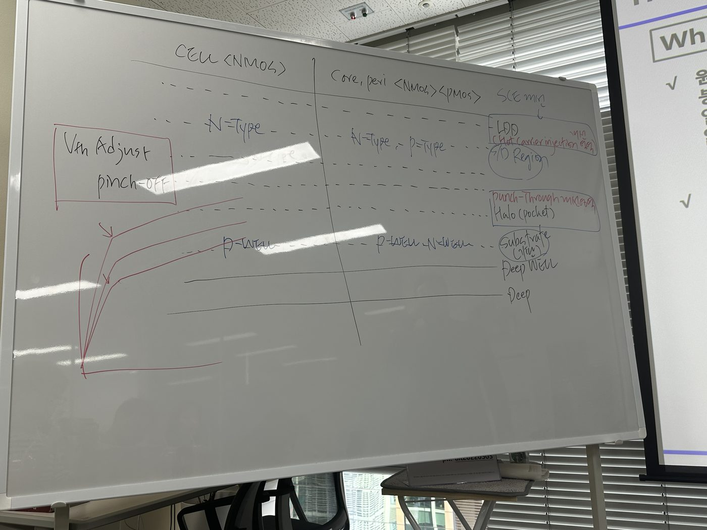
- LDD와 Halo 영역은 Short channel Effect을 줄여주는 역할이다.
- 우리는 지금까지 S/D Region, Substrate만 생각했던 것이지만 이렇게 Substrate 안의 낮은 층부터 지하 8층까지 Ion implantation이 진행되어야 한다.
- Vth Adjust, Pinch-Off는 트렌지스터 동작과 관련 있다.
- 결국 Ion Implantation도 배울게 너무 많고, 결국 트렌지스터의 동작과 전류 전압과도 모두 관련 있기 때문에 공부할 파트가 많다고 한다.
대상: “Vth Adjust, Pinch-Off는 트렌지스터 동작과 관련 있다.”
I-V Curve에 대한 얘기, Saturation이 생기고 그렇게 되는게 해당 영역에 의해 결정되고 동작할 수 있다.
대상: “결국 Ion Implantation도 배울게 너무 많고, 결국 트렌지스터의 동작과 전류 전압과도 모두 관…”
소자 수업에서 제대로 못 듣고 넘어갔던 동작 특성에 대해서 세종대 교수님 수업을 들으면서 복습할 때 오늘 배웠던 내용들을 생각하면서 공부하자. 연결지으면서
Q. 이중에서 도핑 농도가 제일 높아야 되는 영역은? Source Drain
A. Source, Drain이다. Source랑 Drian는 실체가 없다. 점처럼 찍힌 곳이지 편의를 위해서 네모 모양으로 표현한 것이다.
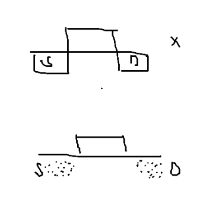
136pg
- Diffusion은 고온에서 진행해야 하기 때문에 PR을 사용하면 안되지만 예전에는 몰라서 그채로 PR 마스크를 사용했다고 함. PR - PAC 분해 온도가 130°C 이고 Duffusion은 1000°C 이런식이니까 Furnace 내부가 난리가 난다고 한다.
- 결국 Diffusion은 PR Mask 사용하지 못한다.
- Diffusion 공정 자체는 70년대에 없어졌다고 한다. 그렇지만 SiO₂ 산화 공정은 막 증착이 되는 것이다. 그 이외에는 Furnace는 열처리하는 용도로 사용했다고 한다.
- AP 시스템이 원래는 Furnace 장비였다고 한다.
137pg
- 우리가 주입하고자 하는 Dopant 들의 순도가 좋아야한다. 그래서 질량 분석기를 통해 우리가 원하는 이온만 뽑아내야한다.
- 같은 불순물을 Rp를 여러번 중첩해서 주입하게 되면 원하는 영역에 넣을 수 있다.
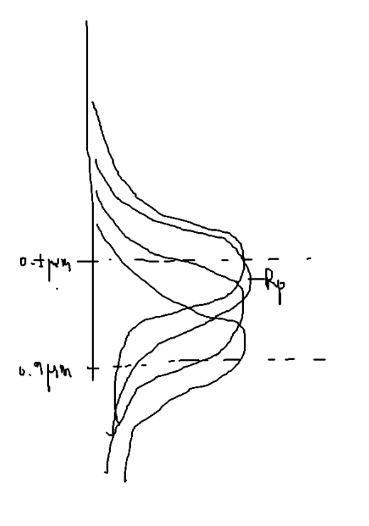
- 이온 에너지가 너무 강하면 PR Mask를 사용할 수가 없다.
28. R! PR Mask의 용도
Photo: Light Source
Etch: Etch Gas
IIP: Ion Energy
→ 근데 최근 공정에서는 Etch 공정이랑 IIP는 사용 못해! 왜? 더 이상 버티지 못해
⇒ 더 이상 못쓰기 때문에 안써! 가 아니라 버틸 수 있는 Hard mask를 사용한다.
대상: “⇒ 더 이상 못쓰기 때문에 안써! 가 아니라 버틸 수 있는 Hard mask를 사용한다.”
아마 예비군 수업 때일 듯 사진 확인하기
140pg
- 일단 이온이 나와야하니까 플라즈마가 나와야겠지
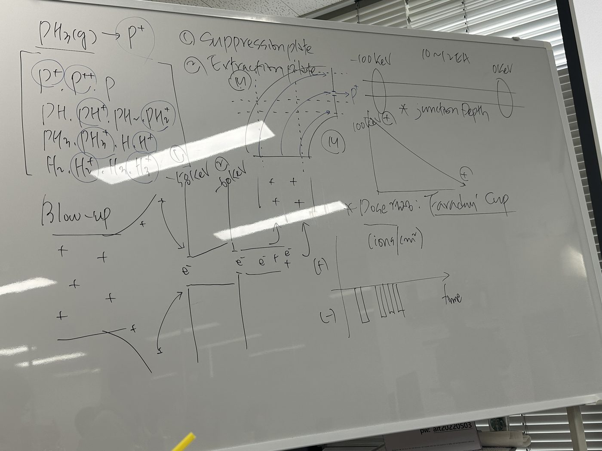
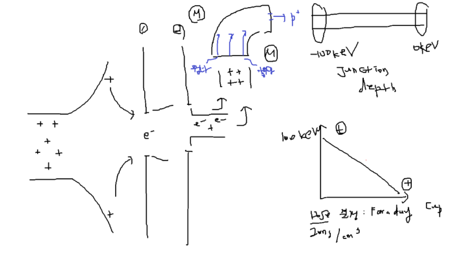
PH₃(g) → P⁺
- 플라즈마는 만들어두고 끝이 아니라 가만히 냅두면 재결합해서 꺼질 확률 99% 이상
- P⁺, P⁺⁺, P
– 여기에서 +은 전자를 잃은 것을 의미한다 ++이면 두 개 잃은 것이다
P나 H 중에 +를 갖고 있는 모든 애들의 거동
- 다양한 +를 갖고 있는 애들은 서로 척력이 발생해서 확 밀어낸다.
- 그걸 다시 모아주는 역할도 필요하고, 애들이 자기장을 걸어줘서 휘게 하면 가벼운 애들은 가벼우니까 안쪽에서 휘게 되고, 무거운 애들은 원심력이 더 크게 작용돼서 큰 반경으로 휜다.
- 그러면 적당하게 휘는 애들만 휘어서 통과할 수 있게 만들어준다.
(1) Suppression plate
(2) Extraction plate
29. Mask는 이온주입시에 Mask 자체도 이온주입이 된다!
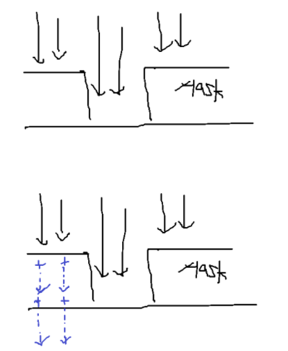
- Wafer는 상하로 움직이고 이온 주입은 좌우로 된다. 따라서 Mask에도 이온이 주입되고 있는 것이다. PR 자체에도 이온 주입이 되고 있는 것이다.
– 그렇다보니 이온은 Mask에만 주입이 되는 것이 아니다.
- PR Mask는 이온 에너지가 높아지면 사용하지 못하기 때문에 Hard Mask를 사용한다.
비유) 비가 내리는 상황에서 아무리 우산으로 비를 방지해도 비가 우수수 내리면 비를 맞을 수 밖에 없잖아?
- Hard Mask로는 SiO₂와 Si₃N₄를 사용한다. 여기에서도 무조건 SiO₂, Si₃N₄를 쓸거야! 이게 아니라 확산 속도를 고려해서 확산 속도가 느린 Hard mask를 골라서 사용을 해야한다.
– 결국 마스크
(1) SiO₂ - Ga/Al Impurity
- Ga/Al 와 같은 불순물들은 SiO₂ 안에서 확산이 빨라서 SiO₂가 마스크 역할을 잘 못한다.
- 결국에 Mask에도 이온주입이 되면 확산해서 들어가게 된다. 이게 SiO₂라고 한다면 확산해 나가는 속도가 SiO₂가 Si보다 느리다.
- Hard Mask를 쓴다고 다 막아지는 것도 아니다. 방지를 해주는 정도이지 100대 0의 개념은 없는 것이다.
(2) Si₃N₄
내 말로 정리
결국에 PR Mask는 이온 주입정도가 강해지면 PR Mask가 녹아버리고 못버티겠지? 그래서 SiO₂나 Si₃N₄를 사용한다고 하더라도 결국 이온주입은 Mask에 동일하게 된다.
그래서 SiO₂랑 Si₃N₄를 선정하는 기준은 확산이 얼마나 잘 되냐. 그 아래 Si에 비해 얼마나 잘 확산을 느리냐가 문제이라는 것이지.
하여간 마스크 써도 이온 주입되는 것이고, 이온 주입이 되었으니 확산돼서 들어가는 것도 고민해줘야 하는 것이고, 그 때 확산되는 정도를 확인하라고
144pg
책 진도 나가다가 갑자기 플라즈마로 트셨음
30. ★진공 & 플라즈마★
- 여기에 나오는 해당 개념들은 반드시 문장으로 정리해둬라
Q. 플라즈마가 무엇인가요?
A.
높은 에너지를 가진 전자가 반응성 기체의 원자, 분자와 충돌하여 Ion(+)과 전자(-)로 전기적으로 분리되어 공존하는 물질의 상태
[답변에 대한 설명]
- 플라즈마의 필요조건은 전자이다. 전자는 어디에서 왔는가? 대기 중, 챔버 안 …
- 높은 에너지를 갖는다? Ionization Energy 전기 에너지를 걸어준다. 그러면 전자가 에너지를 받아서 충돌할 수 있게 해준다.
- 전자가 가속해서 충돌해야 이온과 전자와 전기적으로 분리되고, 공존할 수 있다.
- 특히 주의할 것! 온도하고 상관이 없다. 답변을 보면 온도에 대한 조건이 없다. 그래서 저온 공정이라고 얘기하면 안된다는 것이다. 온도와 관계가 없는거지 저온에서 쓰는게 아니다. 우리는 충돌에 의해서 플라즈마가 형성된다고 말하면 되는 것이다.
- Ion(+)은 Physical rxn의 주체, 라디칼은 Chemical rxn의 주체이다.
대상: “Q. 플라즈마가 무엇인가요?”
공부하고 정리 노트 만들 때 이런 느낌으로 정리하기
대상: “Q. 플라즈마가 무엇인가요?”
답변을 할 때 글을 그대로 읽지 말고 말하듯이 설명해라. 지금 적힌 것은 문어체이고, 구어체로 반드시 다시 정리하기
대상: “플라즈마의 필요조건은 전자이다. 전자는 어디에서 왔는가? 대기 중, 챔버 안 …”
솔직히 몰랐음 알았으면 말로 나왔겠지
Q. 라디칼이 무엇인가요?
A. Unpaired 한 공유 결합쌍을 갖는 물질을 말합니다. 그래서 반응 중에 Chemical Reation의 주체가 됩니다.
ex) H₂O₂의 이름이 과산화수소이다. H₂O + O로 해리되게 되면 O가 라디칼로 반응성이 매우 높다.
- CF₄ gas에서 CF₃ - 이것도 라디칼이다.
ref) Ion implantation에서도 플라즈마를 형성하지만 그 중에서 아까 배웠던 것처럼 이온이 있는 것만 끄집어냈다. 그러면 이때 당연하게 플라즈마 이지만 라디칼을 안쓰는거지!
대상: “ref) Ion implantation에서도 플라즈마를 형성하지만 그 중에서 아까 배웠던 것처럼 이온이 …”
이런걸 생각할 수 있어야 한다고
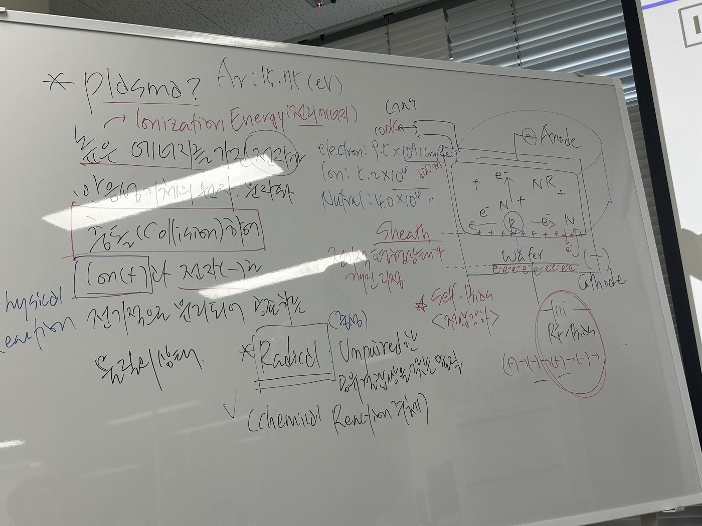
- Radical이 플라즈마 내에서 만들어지면 사방으로 움직일 수도 있다. 제한이 없다.
Q. Sheath가 무엇인가요?
A. 전기적인 평형상태가 깨진 지점입니다.
RF Bias를 걸었을 때 Self bias가 걸리는 메커니즘
(+) → (-) → (+) → …
- + 일 때는 전자가 가지만 (-) 일 때는 양이온이 가야하지만 속도가 느려서 가지 못한다. 그런 상태가 계속 반복되면 전극에 전자들만 쌓이게 된다.
– 조금 더 디테일하게 설명을 한다면 전자의 이동속도가 100km 정도 일 때 양이온이 100m를 갈 정도로 느리다. 따라서 양이온은 중앙에서 거의 가만히 있는 것처럼 보이고 전자들이 전극으로 가게 되는 것이다.
- 전극에 전자들이 쌓이게 되니까 전자들은 반발에 의해서 돌아가게 되며, 전기적 평형상태가 깨진 지점인 Sheath 영역이 생긴다.
- 따라서 양이온들이 기판을 때리게된다.
플라즈마 내에서의 Mobility
- Electron: 9.5 × 10⁷ cm/sec → 100 km
- Ion: 5.2 × 10⁴ cm/sec → 100m
- Neutral: 4.0 × 10⁴ cm/sec
→ 전자는 100km 갈 동안 Ion은 100m 가는 것이다.
Ref) PECVD
- 다 같은데 Plasma에서 중성 라디칼만 사용하는 것이다.
31. Vacuum (진공): 기체 분자수의 감소
1기압: 760 Torr
- 토리챌리가 수은 실험으로..
대상: “토리챌리가 수은 실험으로..”
아 과학 인물 100인 책 다시 빌려야하는데..
Q. 755Torr가 진공인가?
A. 답이 뭔데 그래서?
이상 기체 방정식
PV = nRT
- 아보가드로 방정식으로부터 시작 0°C 1atm 22.4L 1mol의 분자수 → 6.02 × 10²³
진공도를 높이게 되면 압력이 낮아지게 된다
- (1) 기체 분자수 감소
- (2) 충돌 감소
- (3) MFP 증가
→ 진공도를 논하기 보단 압력을 논하는 것이다. 압력이 낮으면 따라오는 3개의 현상이 있는 것이다.
→ 압력은 process가 진행되는 환경이고 압력을 툭 치면 압력으로 읽히는게 아니라 저 위에 3개가 머릿속에 같이 따라와야 한다. 압력이 하나의 파라미터라고 생각하고 끝내는게 아니라, 저 세 개의 특성과 관련된 것임을 기억해야한다.
(1) 저진공: 1~10⁻³
[1] Dry Etch [2] Clean [3] CMP
(2) 중진공: 10⁻³ ~10⁻⁶
[4,5] T/F(PVD,CVD) [6] Diffusion
(3) 고진공: 10⁻⁶ ~10⁻⁹
[7] Photo [8] Ion Implantation
(4) 초고진공: 10⁻⁹~
왜 분류를 하는가? 8대 공정이 전부 진공을 사용하기 때문에
- PVD에서는 실제로 1.57m 정도만 날라간다고 한다. Ar기체를 만들고 증착을 시키겠다고 했을 때 진공도에 따라서 m.f.p가 바뀌게 된다.
Q. PVD에서 압력을 낮추는 이유가 무엇인가?
A. Precusor나 Reactant 중 하나의 m.f.p 를 길게 늘려져서 구현하는 박막의 순도, 품질을 높인다.
→ 여기에서 중요한건 위에서의 3개 중에 하나를 가져와서 설명해야한다는 점이다.
Q. Clean 저진공을 사용하는 이유?
A. 기체분자수를 줄여서 오염이 적은 상태에서 공정을 진행하게 하기 위해서입니다.
Q. Photo 고진공을 사용하는 이유?
A. 기체분자수를 줄여서 Photon의 대기 중 산란 및 흡수를 방지하기 위해서입니다.
32. 플라즈마를 사용하는 공정은 다시 생각해봐야한다?
Q. Dry Etch가 저진공을 사용하는 이유?
A. 플라즈마는 이온 충돌이 일어나야하는데, 진공을 써야한다면 압력이 낮춰져야 하면 충돌량이 줄어든다. 아 그래서 진공을 저진공 영역에서 사용해야하니까 Dry Etch 공정은 플라즈마를 사용하되 저진공 영역에서 사용해서 Collision이 일어나서 플라즈마를 형성할 수 있게 해준다.
Dry etch의 목적은 Ion의 m.f.p를 늘려야 한다. Ion의 방향성이 커져야 한다.
Q. Ion Implantation은 고진공을 사용하는 이유?
A. 아까 이온빔이 한 번도 충돌 안하고 Wafer로 쭉 이어져서 Wafer에 충돌해야하니 m.f.p가 길어야 한다.
Ion m.f.p를 높이는 것이 목표이고, 원하는 이온 불순물만 주입하기 위해서 진공을 사용하는 것이다.
33. 스터디
1. ICP가 CCP보다 플라즈마 밀도도 높고 제어도 유리한데 왜 둘 다 사용할까
- CCP 는 위 아래 전극 이온과 전자가 기하급수적으로 늘어나고 어느순간에 도달하면 재결합 정도가 어째서 유지가 된다.
– 30~40cm로 매우 짧음.
- ICP는 안테나 구조이다. 코일에 의해 자기장이 코일 모양에 따라 수직으로 이동함. 전기장 방향대로 다시 전자가 움직이기 된다.
– 플라즈마의 밀도가 높아지지만 균일도가 떨어지는 문제가 있다.
2. 습식 식각보다 건식 식각이 미세 패턴 형성에 유리한 이유는?
- 2um 정도까지 등방성, 이방성
3. 식각 공정에서 선택비(Selectivity)가 중요한 이유는?
4. 식각 공정에서 온도를 조절하는 이유는?
- Dry etch에서 온도를 논하는 것은 척의 온도이고, 척의 온도는 결국 물질의 휘발성과 연관된다.
- 식각이 결국 휘발을 시켜야 하니까.
5. Self dc bias가 형성되는 이유는?
6. wiw wtw에서 각각의 uniformity가 미치는 영향
7. 하드마스크의 역할 무엇이 달라졌는지 pr mask와의 차이점
- Hard mask 위에 PR이 올라가있는지 여부 체크. Hard Mask 종류를 무엇을 쓰는지?
- Hard mask 먼저 증착하고 PR을 사용한다!
8. etch profile에서 언더컷 I빔은 무엇 때문에 생기고 해결하기 위한 테이퍼는 어떤 방법으로 만든 것인가
9. wet etch에서 린스를 하는이유
10. Notch 불량 생성 원인? Pulsed plasma를 통한 해결 설명
11. Dry etch 이슈 설명? Pattern density effect
12. Over Etch를 진행하는 이유? 그리고 Over Etch를 진행하게 되면 이미 Etch 된 곳은 어떻게 되는 것인가?